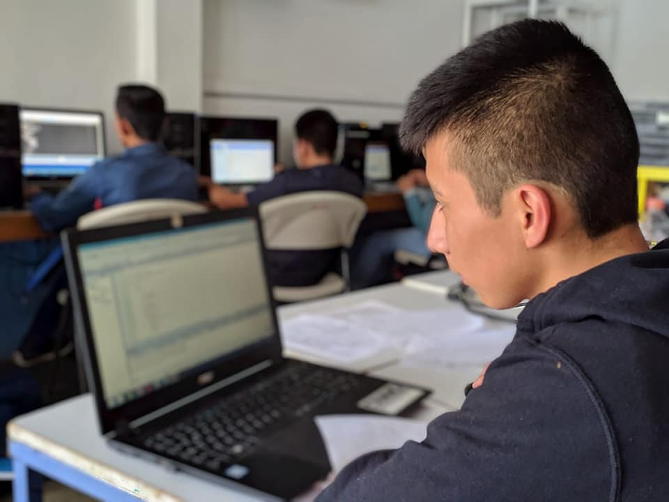
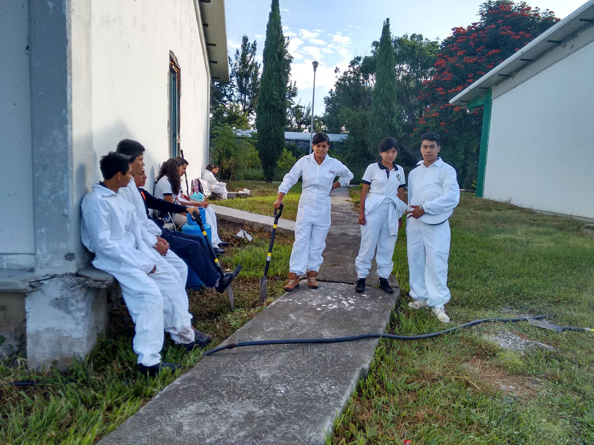
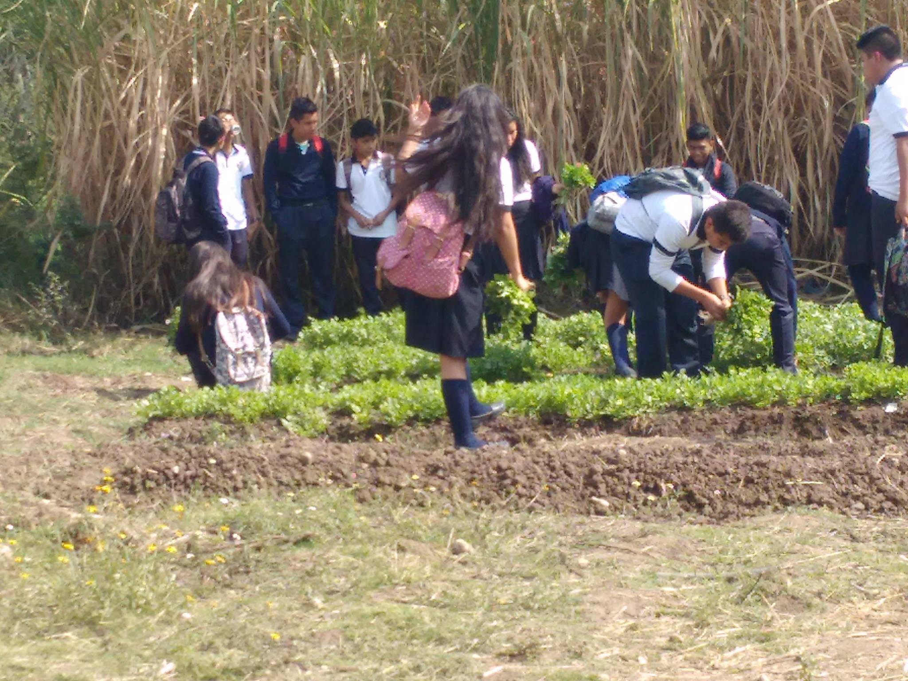

Técnico en soporte y mantenimiento de equipo de cómputo
Técnico en soporte y mantenimiento de equipo de cómputo se desarrolla como vertiente de
la carrera de Informática y permiten al estudiante realizar operaciones de soporte y
mantenimiento a equipos de cómputo de manera presencial y a distancia, tomando como base
las especificaciones del fabricante e instalar redes LAN de acuerdo a las necesidades de
la organización.

Técnico en programación

Técnico en Programación ofrece las competencias profesionales que permiten al estudiante
realizar actividades dirigidas a: analizar, diseñar, desarrollar, instalar y mantener
software de aplicación tomando como base los requerimientos del usuario.
Técnico en rehabilitación y mejoramiento ambiental
Técnico en Rehabilitación y Mejoramiento Ambiental ofrece formar técnicos del nivel medio
superior, conscientes de la necesidad del mejoramiento ambiental de su entorno, por medio
de los conocimientos y los parámetros técnicos contenidos en los módulos, para que el
estudiante sea capar de proponer estrategias, alternativas de solución y con acciones,
contribuya a restablecer el equilibrio ecológico causado por deterioro ambiental, buscando
la participación activa y responsable de la sociedad para poder alcanzar una mejor calidad
de vida.

Técnico en apicultura

Técnico en Apicultura ofrece realizar tareas de manejo dentro de un aplario: identificar
y cultivar especies vegetales de interés apicola: diagnosticar enfermedades y plagas,
elaborar y ejecutar programas sanitarios, realizar una correcta recolección de los
distintos productos y subproductos de la colmena ( miel, jalea real, polen, apitoxina,
propóleos, cera, etc.); realizar una producción comercial de reinas, celdas reales y
núcleos: y para ejecutar, en general, una comercialización y gestión apícola eficiente.
Técnico en administración para el emprendimiento agropecuario
Técnico en administración para el emprendimiento agropecuario aplica los principios de la
administración y contabilidad de empresas y negocios comunitarios , con amplio
conocimiento y actitud de liderazgo, con habilidades, destrezas y actitudes que asumen con
actitud crítica, analítica y responsable, estableciendo relaciones interpersonales de
calidad y sustentabilidad con el medio ambiente.

Técnico agropecuario

Técnico en Agropecuario ofrece participar en el desarrollo de proyectos agropecuarios,
ejecutando actividades de investigación, asistencia y extensión, a fin de mejorar la
producción animal y vegetal de la Institución.